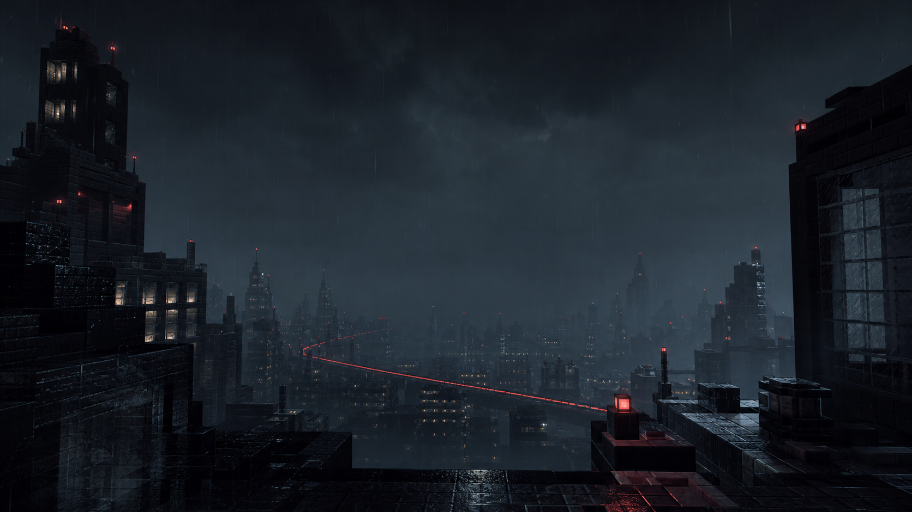

FPS Counter
HUDCurrent frames per second.

FABRIC · MINECRAFT 26.1.2
Midnight is a focused Minecraft client for players who care about frame consistency, clean information, and control over every detail.
Midnight assembles proven rendering, simulation, memory, and culling work into one maintained Fabric setup. Every managed file is resolved for your game version and verified against its Modrinth checksum.
The built-in performance monitor tracks current FPS, average FPS, frame time, and a rolling 30-second 1% low.
Search the actual Midnight module set. No fake feature count.
Current frames per second.
Current, average, and rolling 1% low FPS.
Current render duration in milliseconds.
Left and right clicks per second.
Live movement and mouse input.
Exact block position.
Distance to the current crosshair target.
Horizontal and vertical movement speed.
Current server latency.
Players currently online.
Hold C for competitive zoom.
Maintain sprint while vanilla permits it.
Equipped armor overview.
Remaining held-item durability.
Active status-effect count.
Current biome name.
Current world dimension.
Local block-light level.
Used heap as a percentage.
Time since client startup.
Steady camera while walking.
Faster opaque leaf rendering.
Less expensive transparency mode.
Disable smooth block shading.
Disable entity shadow rendering.
Current in-game clock.
Microsoft authentication, Fabric installation, Minecraft assets, Modrinth discovery, dependency resolution, and safe mod controls live in one restrained desktop launcher.
MIDNIGHT LAUNCHER · LATEST RELEASE
Detecting your system…
No published launcher build was found yet.
View GitHub Releases ↗